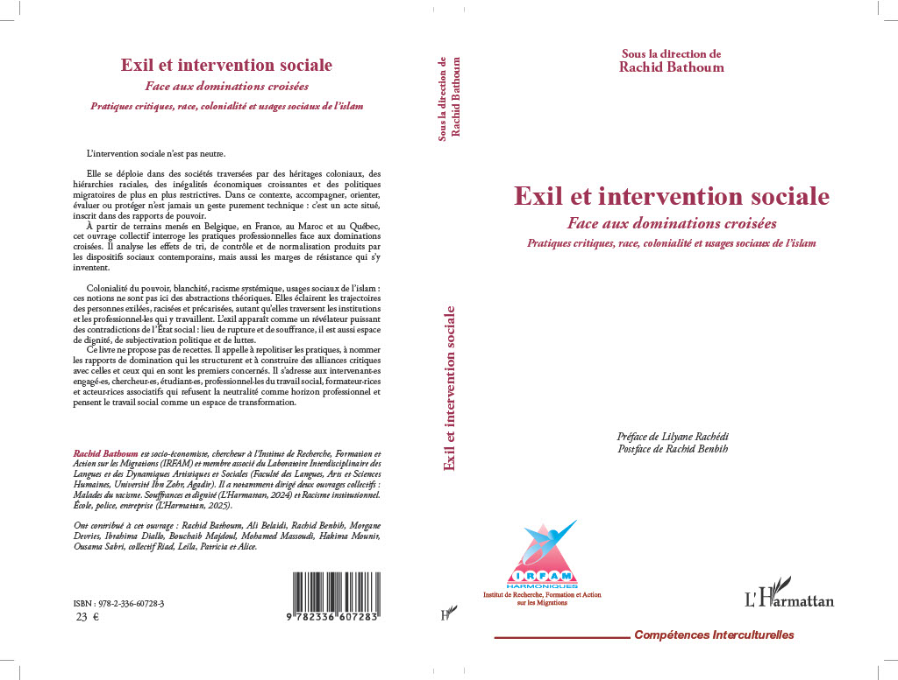

Ouvrage collectif sous la direction de Rachid Bathoum
EXIL ET INTERVENTION SOCIALE
Face aux dominations croisées.
Pratiques critiques, Race, Colonialité et usages sociaux de l’islam
À paraître en 2026, L’Harmattan.

Cet ouvrage collectif interroge les liens entre exil, institutions et pratiques d’intervention sociale, en croisant analyses critiques et expériences de terrain.